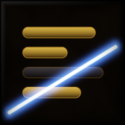
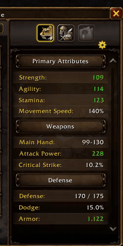

StatTrim
Hide, merge and reorder categories and stats right inside the character window. Edit with checkboxes and arrows, works in combat.
See it in action
A recreation in your browser, close to what you see in game.
Recorded in game

What it does
Settings
- ◆Gear icon above the stats panel, or
/stt. - ◆
/stt list: all categories and stats in one window. - ◆
/stt resetshows everything again,/stt orderrestores the original order.
Changelog
- Brighter icon that stays readable on the round minimap button.
- New icon: gilded stat bars, one cut away, for the minimap button and the addon list.
- The stats panel is only laid out again when the game changed it, not ten times a second while the character window is open. Without any hidden or moved stats StatTrim does nothing at all.
- An error during the layout no longer stops StatTrim until a /reload.
- Hide whole categories or single stats in the character window's stats panel.
- Hide only a category's name: its stats join the category above.
- Reorder categories and stats with arrows.
- Edit mode right in the window: gear icon above the stats panel (or /stt) shows a checkbox and arrows on every row.
- Works in combat without errors: StatTrim never touches Blizzard's stat list, it only moves and fades the finished rows.
- /stt list: all categories and stats in one window. /stt reset shows everything again, /stt order restores the original order.
More from Bencepo
SwingCast
ProcFlare
LevelTrail
Feedback, bugs and ideas
Every addon is tested in game before it ships, but Forever changes often. Tell me what breaks and what you miss.
Report a bug
Leave a comment on the addon's CurseForge page: what you did, what happened, and the error text from BugSack if there is one.
Share your run
LevelTrail turns your export into a share image for Discord or Reddit, VendorFloor does the same for your flips. Names can be hidden.
Suggest a feature
Ideas that make leveling faster or the UI calmer have the best chance. Comments on CurseForge reach me directly.
Support the addons
All addons and pages are free and stay free, without ads or tracking. If they save you time in game, a tip keeps new features and fixes coming.